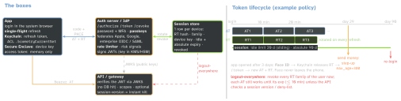

architecture · folio
In one line: Login is a system, not a screen. An identity step proves who (password + MFA, passkey, SSO); the server issues a short-lived access token and a server-side, revocable refresh credential bound to this device, which the app keeps in the Keychain and re-opens with biometrics. Refresh, step-up, recovery, logout and rate limits need the same care as the happy path — attackers pick the weakest one.
Download PDF Print view LaTeX source


Session vs token — the real choice
| server session | self-contained JWT | |
|---|---|---|
| credential | opaque random id | signed claims |
| per request | store lookup | signature check only |
| revoke | delete the row: instant | wait for exp |
| scales by | shared store | stateless verifiers |
Mobile default = hybrid: short JWT access (stateless, 5–15 min) + opaque refresh stored server-side = the revocation point. Web: HttpOnly cookie session or a BFF — no tokens in JS.
Re-authentication with biometrics — two designs
- A. Biometry-gated secret: RT in the Keychain with
SecAccessControl.biometryCurrentSet; Face ID makessecuritydrelease it, then a normal refresh. Simple; re-enrolment destroys the item → full login. - B. Device key + challenge (stronger): at login the app registers a Secure Enclave P-256 public key; unlock = server nonce → SE signs after Face ID → server verifies → tokens. Proves possession and presence; a copied RT alone is useless.
- Either way biometry is local; the server trusts a key, never a
Bool. Fallback: passcode (.userPresence) or full login.touchIDAuthenticationAllowableReuseDurationlets a recent biometric device unlock count — not an earlier in-app check.
Device binding & step-up
Bind tokens to a key the device holds — DPoP (RFC 9449) proofs, mTLS, or design B — so a leaked token can’t be replayed elsewhere; add App Attest / Play Integrity to vouch for the app. Step-up for money, email or password change: OIDC max_age / prompt=login / acr_values, check auth_time; APIs answer insufficient_user_authentication (RFC 9470).
Example — the session store is the revocation point
CREATE TABLE session (
id uuid PRIMARY KEY, user_id uuid NOT NULL,
rt_hash bytea NOT NULL, -- never the raw token
family uuid NOT NULL, -- reuse -> kill family
device_pubkey bytea, -- design B / DPoP
last_used timestamptz, absolute_exp timestamptz,
revoked_at timestamptz);
-- log out everywhere (also on password reset):
UPDATE session SET revoked_at = now()
WHERE user_id = $1 AND revoked_at IS NULL;Remember
“Short access, revocable refresh, bound to the device, opened by biometrics — and recovery as strong as login.”
Identity step — passkeys, SSO, MFA
- Passkeys first: WebAuthn key pair per site, phishing-resistant, nothing to steal server-side. iOS: AutoFill sign-in (16) · auto-upgrade after a password login (18) · passkey sign-up
ASAuthorizationAccountCreationProvider(26). Keep recovery. - SSO: social or enterprise — your IdP federates (OIDC/SAML) and still issues your tokens; the app talks only to your auth server (
ASWebAuthenticationSession). - MFA strength: passkey / security key (phishing-resistant) > TOTP (RFC 6238, 30 s) > push (number matching vs fatigue) > SMS OTP (SIM swap; NIST “restricted”).
Brute force & rate limiting
Limit per account and per IP/device, plus globally; progressive delays + risk challenges, not hard lockout. Credential stuffing (breached pairs, one try per account) beats per-account limits — OWASP: MFA is “by far the best defense”. Same answer and timing for “no such user” and “wrong password”. 429 (+ Retry-After). NIST SP 800-63B-4 (Aug 2025): ≥ 15 chars if the password is the only factor (≥ 8 with MFA), no composition rules, no periodic change, check a breached/common blocklist, ≤ 100 consecutive failures per account.
Recovery & logout
Recovery is the real front door: single-use short-lived email link or recovery codes, a second factor if enrolled, a cool-down, a notice to every device; never weaker than login, never reveals whether an account exists. Logout: /revoke the RT (RFC 7009) + wipe Keychain + end the IdP session (else the next login is silent). Everywhere: revoke all rows, bump the session version; OIDC back-channel logout tells relying parties.
Traps
- “JWTs can’t be logged out” — put the kill at the refresh token; keep ATs short.
- Face ID as
if ok { showHome() }— gate a key or a secret, not a screen. - Password reset that leaves old sessions alive — the attacker stays in.
- Hard lockout after 5 tries = a denial-of-service button.